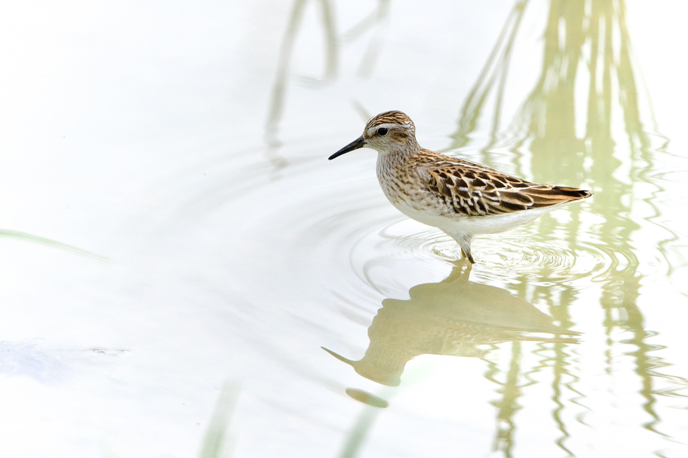
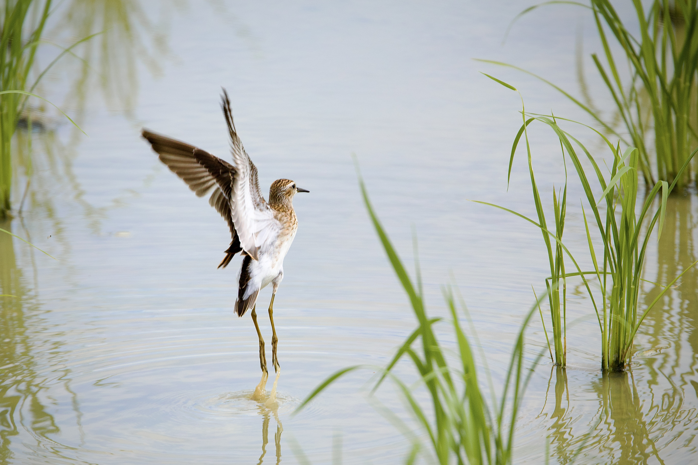
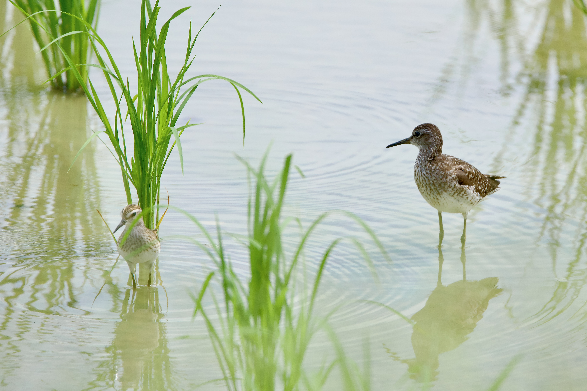

Long-toed Stint
Calidris subminuta
Order: Charadriiformes
Family: Scolopacidae

Tiny peep! Looks like a scaled-down Pectoral Sandpiper, with a faint white supercilium and streaky, golden upperparts.

Has yellow legs and rather long toes.

Bird photos rarely show the actual size of birds. Look at how this bird is dwarfed by the Wood Sandpiper. Even so, a Wood Sandpiper is still not very large. This means that tiny peep must be very tiny indeed!